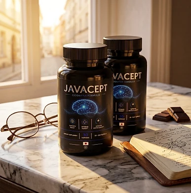
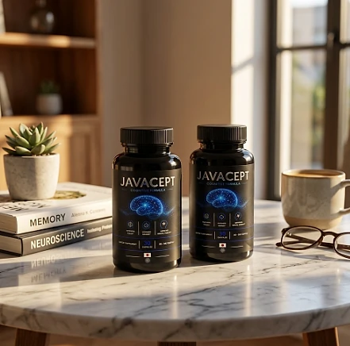

What Is Javacept And How Does It Work?
Javacept is a dietary supplement in vegetarian capsules designed to support focus, memory, and mental clarity for adults who want to address forgetfulness, brain fog, and the difficulty of staying sharp that can build up with age and stress through a simple, dependable approach — without complicated routines or temporary quick fixes.
It utilizes a simple daily capsule that combines L-Arginine, L-Arginine AKG, L-Citrulline HCL, L-Citrulline Malate, Beta-Alanine, and Niacin to support healthy blood flow to the brain, cellular energy, and everyday cognitive performance, helping the body maintain its natural balance throughout the day.
According to the official website, Javacept is a cognitive support formula built on a matrix of amino acids traditionally associated with circulatory and vascular support, aiming to support cognitive function through healthy blood flow. The label sums it up in three points: it supports focus, optimized memory, and mental clarity.
Rather than acting as a short-lived stimulant, Javacept focuses on a whole-formula approach, working gradually alongside daily routines to help maintain steady focus and a clear mind over time.
With consistent daily use, the formula is intended to support sharper recall, steadier concentration, and less mental fatigue at the end of the day, especially when combined with good sleep, regular movement, and mental activity.
From a practical standpoint, Javacept is a daily cognitive support capsule — one capsule a day with water, with no powders to mix and nothing to measure.
Manufactured in the USA with globally sourced ingredients, according to the product label, and produced in an FDA-registered facility, according to the official FAQ, Javacept is designed for regular daily use. It is a dietary supplement and does not treat memory disorders or any diagnosed condition.
Javacept Ingredients
Every capsule of Javacept contains six active ingredients plus calcium, and the Supplement Facts panel discloses the amount of each one. These are the ingredients listed on the label:
L-Arginine (200 mg): An amino acid the body converts into nitric oxide, which the official website includes to support healthy blood flow to the brain.
L-Arginine AKG 2:1 (200 mg): Arginine bound to alpha-ketoglutarate, a form chosen to extend the support through the day.
L-Citrulline HCL (100 mg): A precursor the body recycles into arginine, helping keep blood flow steady.
L-Citrulline Malate (100 mg): Citrulline combined with malate, a compound involved in cellular energy production.
Beta-Alanine (40 mg): An amino acid that raises carnosine, a natural antioxidant that helps protect cells from everyday wear.
Niacin (7.5 mg NE, 47% DV) and Calcium (18 mg): Vitamin B3 supports energy metabolism in every cell, and calcium carbonate rounds out the formula.
Together, these ingredients are designed to support circulation, cellular energy, and mental clarity from within. The other ingredients are hypromellose (the vegetable capsule), vegetable stearate, and silicon dioxide, so the capsule is suitable for vegetarians.
Javacept is designed for daily use, offering a natural, non-prescription approach to supporting cognitive wellness, without stimulants or complicated routines.
Javacept Side Effects
Javacept is generally considered well tolerated and is designed for adults who are looking for a simple, stimulant-free approach to cognitive support, especially those who prefer an easy one-capsule daily routine to support focus and memory without resorting to strong stimulants.
According to the official FAQ, Javacept is produced in the United States in an FDA-registered facility, in vegetable capsules, with naturally derived ingredients, no artificial stimulants, and no harmful chemical additives, reinforcing consistency, safety, and reliability.
With no widespread reports of serious side effects, Javacept is generally considered a well-tolerated option. Because L-Arginine and L-Citrulline support blood vessel dilation, they can lower blood pressure, so the official FAQ recommends that anyone taking medication for blood pressure, blood thinners, or vasodilators show the label to their doctor first. Niacin can cause a brief warm flush in some people, and beta-alanine can cause a harmless tingling. It is not intended to diagnose, treat, cure, or prevent any disease, and individual results may vary.
According to the label, it is not for use by anyone under the age of 18 or by pregnant or nursing mothers, and anyone taking medication or with a medical condition should consult a physician before using Javacept. Ongoing memory concerns deserve a medical evaluation.
Javacept Dosage
The recommended Javacept dosage is one capsule a day, as printed on the label, and it is designed to fit easily into a daily routine, making consistency simple and convenient. As an easy daily capsule, it requires no powders to mix, no drinks to prepare, and nothing to measure.
The official FAQ suggests taking Javacept with a glass of water, preferably in the morning before a meal, which allows the amino acids and vitamin B3 to work consistently throughout the day.
For best results, consistency is key. Each bottle contains 30 capsules, a 30-day supply, and because support for circulation and cognition builds gradually, many people make it part of an ongoing routine; the official FAQ points to about six months of use as ideal.
There is no need for complex schedules or multi-step routines. One capsule a day is designed to build lasting support gradually alongside good sleep, regular movement, a balanced diet, and mental activity. The label also advises storing the bottle in a cool, dry place below 30°C (86°F) and not using it if the safety seal is damaged or missing.
As with any dietary supplement, it's important not to exceed the recommended dose and to check the label on your bottle. Javacept works best when used regularly, combined with proper hydration, balanced nutrition, and healthy daily habits.
Javacept – Refund Policy
You can order Javacept with confidence, knowing that every purchase is protected by a 60-day guarantee from the date of purchase. This allows you to try the formula and decide if it delivers the support you expect.
According to the refund policy on the official website, refund requests can be made after a minimum trial period of 30 days and must be started within 60 days of the purchase date. Only sealed bottles are eligible, shipping and customs fees are not refunded, return shipping is paid by the customer, and a 20% restocking fee is deducted.
How the refund process works: If you decide Javacept is not right for you, email customer support to request a return authorization code, then follow the return instructions provided. Once the returned items are received and verified, your refund will be issued to the original payment method, and you will receive a confirmation email.
Customer Support Contact Information: contact@customercs.com or +1 (507) 448-8190, as printed on the product label. The team typically replies to emails within 48 business hours.
Refund Processing Time: After your refund is processed, it may take 5 to 10 business days to appear on your statement, depending on your financial institution.
This refund policy is designed to give customers a clear and transparent experience when trying Javacept.
Javacept Customer Reviews
-
Robert S., 66Verified Purchase – 6 Bottles
“… In addition to constantly forgetting things and feeling confused, I had trouble following conversations with my grandchildren. Since I started taking Javacept, everything has changed. I can follow complex stories, remember important dates, and I'm finally thinking as sharply as I used to. Best of all, I feel confident speaking up in groups again. Javacept really works!”
-
Patricia MS., 79Verified Purchase – 6 Bottles
“I struggled with memory loss for years and felt like my mind was slipping away more each day. Simple things like remembering where I put my keys or recalling a neighbor's name became embarrassing challenges. Then I discovered Javacept. Within just a few weeks of taking it daily, I noticed myself remembering details again and thinking more clearly. My mental fog started lifting effortlessly, and I finally feel in control of my mind again. Javacept changed my life!”
-
Don K., 51Verified Purchase – 6 Bottles
“I was always worried about losing my mental sharpness, especially after seeing my father struggle with severe memory issues. When I discovered Javacept, I decided to give it a shot. After a few months of taking it, my life completely changed. My mind feels clear, I can remember names and faces easily, and I no longer worry about my cognitive future. Even my children noticed the difference in our conversations. Javacept is amazing!”
Javacept – Where To Buy
Javacept is sold through its official website, so if you decide to try it, it's important to be careful about where you purchase it. The official website is the only sales channel the manufacturer lists, and it does not point to marketplaces such as Amazon, eBay, or Walmart.
Listings on third-party platforms may look similar but cannot be verified as authentic, raising concerns about safety, quality, and ingredient freshness. Products purchased outside the official source may not be covered by the 60-day guarantee.
For this reason, it makes sense to purchase Javacept only through the official website. Buying directly from the official source ensures you receive the authentic original product, manufactured in the USA, with access to customer support and the full guarantee. The refund policy and the support contact are published in the official FAQ.
To avoid counterfeit batches and ensure maximum quality, always verify that you are ordering from the official Javacept website before completing your purchase.
To ensure you’re getting the authentic product, most users choose to visit the official website.
Is Javacept A Scam?
Based on what the official website and the product label disclose, Javacept does not appear to be a scam. It is a real capsule supplement, sold through an established retailer (BuyGoods), and formulated to support focus, memory, and mental clarity as part of a consistent routine.
The ingredients used in Javacept — L-Arginine, L-Arginine AKG, L-Citrulline HCL, L-Citrulline Malate, Beta-Alanine, and Niacin — are well known amino acids and vitamins, and the label discloses the amount of each one, which is more transparent than a proprietary blend.
In addition to its formula, Javacept is manufactured in the USA with globally sourced ingredients, according to the product label, which also identifies the distributor, GEX Corporation LLP in Ogden, Utah, with a phone number, with a focus on safety, purity, and consistency.
The customers quoted on the official website describe remembering names and details again, thinking more clearly, and feeling more confident in conversations, and the formula offers an easy daily habit, making Javacept a practical option for those seeking natural cognitive support. Results vary from person to person, and no supplement replaces medical care.
Javacept is backed by a 60-day guarantee. The refund rules, including the sealed-bottle requirement and the restocking fee, are published on the official website, which underscores the manufacturer's transparency with customers.
If you're looking for a simple daily capsule to support focus and memory without complicated routines, Javacept is worth considering — especially when purchased directly from the official website.
For those who want to verify product details or check current availability, the official Javacept website remains the safest option.

Check Availability On Official Website